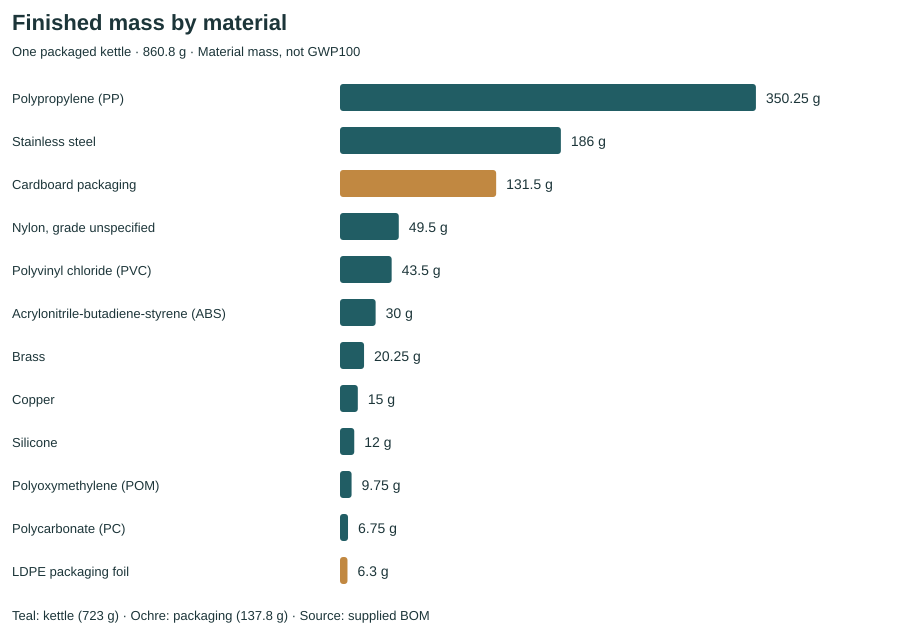

BC1 · INVENTORY & DATA READINESS
1 L 플라스틱 전기주전자
공장 출고 기준 LCA 데이터 감사
제공된 BOM과 실제 USLCI 원본을 확인한 독립 실행 기록입니다. 계산에 필요한 데이터 연결과 제조 정보가 충족되지 않아, 탄소배출 총량은 아직 산출하지 않았습니다.
제품 질량
723 g
포장 질량
137.8 g
포장된 주전자 1대
860.8 g
GWP100: 미계산단위: kg CO₂-eq / 포장된 주전자 1대. 누락된 값을 0으로 처리하지 않았습니다. GWP 기여도 상위 3개와 신뢰구간도 산출하지 않았습니다.
확인된 결과
질량 검산은 통과했습니다. 배경자료는 USLCI 1.2026-09.0이며, 후보 그래프에서 고유 공정 383개를 검사했습니다. 공급·배분·대체효과 검토가 남은 연결은 716개입니다. 이는 구조 감사 결과이며, 완성된 LCA 공급망을 의미하지 않습니다.

재료별 매칭 판정
| 투입물 | 판정 | 데이터셋 | 선정 근거 및 제한 |
|---|---|---|---|
| Stainless steel | 재료 후보 / 계산 미승인 | Steel; stainless 304; flat rolled coil | 304 flat rolled coil is a possible feedstock proxy. BOM specifies neither alloy nor product form. Dataset already includes steelmaking and rolling; kettle component forming remains unknown. No impact factor accepted. |
| Brass | 미해결 | unknown | No brass process name found in complete archive scan. Copper plus zinc would require a documented alloy composition, alloying energy and suppliers; none supplied. |
| Copper | 금액 기반 연결 / 미채택 | Copper; at storage Bridge; USLCI to USEEIO | Bridge converts 1 kg regional-storage copper to 9.13 USD (2012 producer price) of Copper, gold and silver concentrates. This broad mining-sector bridge is not a physical refined-copper LCI factor; USEEIO supplier and price/sector relevance require review. |
| Polypropylene (PP) | 재료 후보 / 계산 미승인 | Polypropylene, PP; virgin resin; at plant | Virgin PP resin matches polymer but recycled content, additives and molding are unknown. Resin is gate-to-gate and requires upstream links. No impact factor accepted. |
| Polyvinyl chloride (PVC) | 재료 후보 / 계산 미승인 | Polyvinyl chloride resin, PVC; suspension grade; at plant | Suspension-grade PVC resin is a polymer candidate; plasticizers, compounding and component forming are not known. Dataset includes incoming transport within its own resin boundary, which must not be counted again. |
| Nylon, grade unspecified | 금액 기반 연결 / 미채택 | Nylon 6 Bridge; USLCI to USEEIO | Nylon 6 bridge is retained for inspection only; no nylon grade chosen. Both nylon 6 and nylon 66 bridge to a broad Plastics monetary sector. Grade, provider and proxy validity unresolved. |
| Polyoxymethylene (POM) | 미해결 | unknown | No POM/polyoxymethylene/polyacetal process name found. Formaldehyde is a potential feedstock, not a complete polymer-production dataset. |
| Polycarbonate (PC) | 금액 기반 연결 / 미채택 | Polycarbonate Bridge; USLCI to USEEIO | PC bridge converts 1 kg to 6.970610088 USD (2012 producer price) of Plastics. Broad monetary-sector substitution has not been validated, and external supplier inventory is absent. |
| Acrylonitrile-butadiene-styrene (ABS) | 재료 후보 / 계산 미승인 | Acrylonitrile-butadiene-styrene, ABS; copolymer resin; at plant | ABS copolymer resin matches polymer class. Kettle-grade formulation and molding unknown. Explicit exchanges govern linking; description alone is not a cumulative emission factor. |
| Silicone | 미해결 | unknown | No silicone/siloxane production process name found. Silicone elastomer is not silicon metal or silica. Grade and curing process are unknown. |
| LDPE packaging foil | 재료 후보 / 계산 미승인 | Low-density polyethylene, LDPE; virgin resin; at plant | LDPE virgin resin matches the named polymer but does not cover finished film extrusion and loss. No conversion burden accepted. |
| Cardboard packaging | 재료 후보 / 계산 미승인 | Corrugated product; average production; at mill | Average corrugated product is a conditional proxy because board construction and recycled share were not supplied. It already covers corrugator/sheet-plant activity; avoid adding the same conversion again. |
검증 결과
| 검증 | 결과 | 근거 |
|---|---|---|
| mass_Kettle | pass | 723.00 g; expected 723 g |
| mass_Packaging | pass | 137.8 g; expected 137.8 g |
| archive_integrity | pass | SHA-256 matches source manifest; ZIP CRC verified |
| supplier_closure | fail | See supplier_closure.csv; unique-flow links are diagnostic candidates |
| reference_flow_metadata | pass | One quantitative reference per candidate root; normalization not applied to LCIA |
| g_to_kg_units | pass | Decimal conversion divides every mass by 1000 |
| purchase_mass_balance | not_calculated | Baseline yields are unknown; illustrative scenarios are separate |
| contribution_sum | not_calculated | Missing GWP values remain null/blank, not zero |
| double_counting | unresolved | Resin/conversion boundaries and supplier allocation must be resolved before impact calculation |
| characterization | not_calculated | No LCIA method or factors selected |
민감도와 불확실성
수율 100%, 98%, 95%를 가정한 질량 민감도만 계산했습니다. 이는 사용자가 제공한 실제 수율이나 확률분포가 아닙니다. GWP 불확실성·Monte Carlo·P05/P95는 미계산입니다. 질량 민감도 표
탄소배출 계산을 완료하려면
- 황동·POM·실리콘의 적합한 물리적 LCI와 나일론 등급을 확보합니다. 구리·PC·나일론의 금액 기반 대체자료를 사용할 경우 섹터와 가격 기준, 외부 USEEIO 연결을 별도로 검토합니다.
- 소재별 수율, 성형 공정, 조립 전력, 운송 거리와 스크랩 처리를 결정합니다. 재료·포장·에너지의 중복 계상을 확인합니다.
- 전력 등 외부 공급자료, 내부의 누락·모호한 공급자, 공동제품 배분과 수식을 해결하고 FEDEFL과 호환되는 GWP100 방법을 적용합니다.
- 원본 결과를 보존한 새 실행에서 계산하고 기여도 합계와 단위, 질량수지, 미특성화 흐름을 검증합니다.